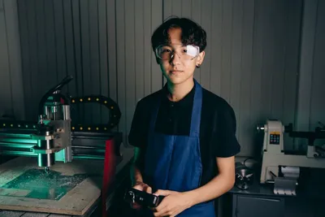
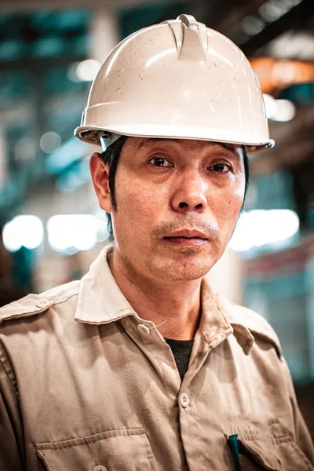
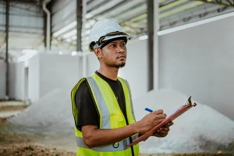

採用情報

Message
ものづくりの未来を、
一緒に削り出そう。
柊精工の部品は、医療機器やロボット、半導体をつくる装置の中で働いています。目には見えにくい場所で、社会を支える仕事です。
最初から上手な人はいません。先輩がそばについて、機械の扱いから図面の読み方まで一つずつ教えます。手を動かして形にすることが好きな方を待っています。
Voice
先輩社員の声

機械科の高校を出て入社しました。初めて自分でプログラムを組んだ部品が検査に合格したときの嬉しさは、今でも覚えています。

0.005mm を確かめるのが私たちの仕事です。お客様から「柊さんの部品は検査しなくていいくらい」と言われたときは誇らしかったです。

お客様の図面を見て、工場のみんなと「どう削るか」を相談するのが楽しい仕事です。両方の言葉がわかる通訳のような役割です。
Requirements
募集要項
マシンオペレーター
| 仕事内容 | CNC 旋盤・マシニングセンタの操作、段取り、加工後の寸法確認。経験に応じて加工プログラムの作成もお任せします。 |
|---|---|
| 応募資格 | 高卒以上。未経験歓迎（入社後3か月は先輩について研修します） |
| 給与 | 月給 210,000円〜（経験・能力を考慮します） |
| 勤務時間 | 8:30〜17:30（休憩 75分） |
| 休日 | 土日祝、夏季・年末年始（年間休日 121日） |
品質保証
| 仕事内容 | 三次元測定機などによる寸法検査、検査成績書の作成、お客様からの品質に関するお問い合わせへの対応。 |
|---|---|
| 応募資格 | 高卒以上。測定機の使用経験があれば歓迎 |
| 給与 | 月給 220,000円〜（経験・能力を考慮します） |
| 勤務時間 | 8:30〜17:30（休憩 75分） |
| 休日 | 土日祝、夏季・年末年始（年間休日 121日） |
技術営業
| 仕事内容 | お客様からいただいた図面の確認、見積りの作成、加工方法の提案。工場とお客様の間に立つ仕事です。 |
|---|---|
| 応募資格 | 大卒以上。図面を読める方歓迎（機械系の学科出身、または製造業の経験） |
| 給与 | 月給 240,000円〜（経験・能力を考慮します） |
| 勤務時間 | 8:30〜17:30（休憩 75分） |
| 休日 | 土日祝、夏季・年末年始（年間休日 121日） |